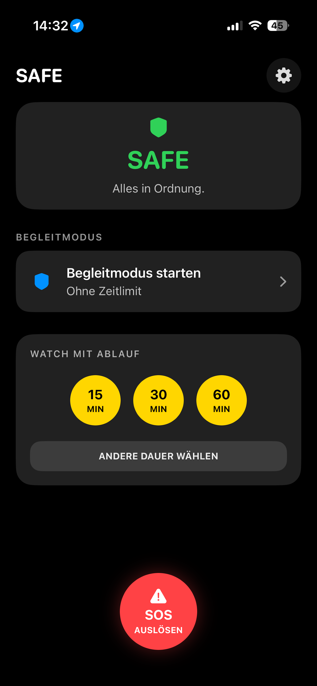

Begleitmodus
Starte SAFE ohne Zeitlimit oder wähle eine Dauer, die zu deinem Weg passt.
DEIN BEGLEITMODUS
SAFE unterstützt dich auf dem Heimweg und in Momenten, in denen du dich sicherer fühlen möchtest.
EINFACH UND BEWUSST
Keine Registrierung. Kein dauerhaftes Tracking. Du entscheidest bei jeder Nachricht selbst, ob sie gesendet wird.
Starte SAFE ohne Zeitlimit oder wähle eine Dauer, die zu deinem Weg passt.
SAFE erinnert dich nach Ablauf deiner WATCH-Session an deinen Check-in.
Bereite eine Nachricht mit deinem aktuellen Standort und einer klaren Bitte um Hilfe vor.
Lege Personen und Gruppen aus deinen Kontakten an.
NEU IN SAFE
SAFE begleitet dich beim ersten Start durch Standort, Mitteilungen und dein Sicherheitsnetz.
Probiere SOS und Begleitmodus in Ruhe aus – ohne dass aus der SAFE-App eine SMS versendet wird.
Nach dem Versand öffnet der Apple-Maps-Link eine klare Kartenansicht deines Standorts.
Dein SAFE-Status ist auf dem Home- und Sperrbildschirm schnell im Blick.
Bereite hilfreiche Nachrichten direkt in iMessage vor – die Sendung bestätigst du selbst.
FÜR IPHONE UND APPLE WATCH
Nutze SAFE auf dem iPhone, am Action Button, über Widgets und den Sperrbildschirm oder am Handgelenk mit der Apple Watch.
